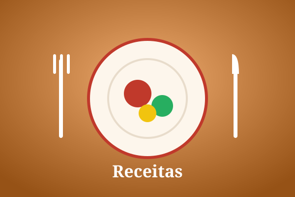

Bem-vindo ao Sabor & Arte
O Sabor & Arte é um blog dedicado a quem ama cozinha e boa mesa. Aqui você encontra receitas testadas e explicadas passo a passo, viaja pelos sabores das diferentes culturas gastronômicas e descobre indicações de restaurantes que valem a visita. Nossa proposta é unir o prazer de comer bem com o conhecimento sobre ingredientes, técnicas e a história por trás de cada prato.
Conteúdos em destaque

Receitas
Pratos do dia a dia e receitas especiais com ingredientes acessíveis, modo de preparo detalhado e dicas para não errar.